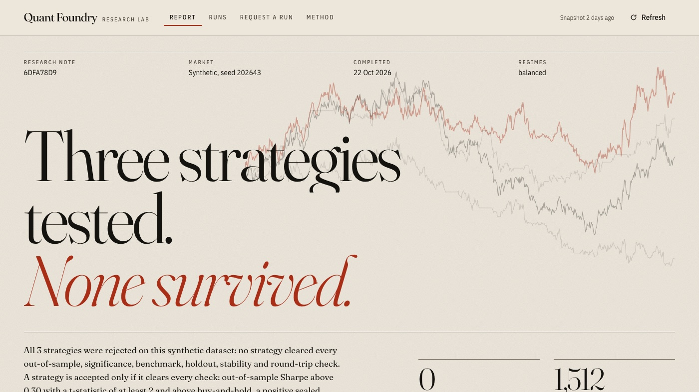

Python · Quantitative research · 2026-10
Quant Foundry
An adversarial research lab for trading strategies: deterministic walk-forward backtests on synthetic markets, a sealed holdout, explicit costs, and rejections published as prominently as wins.

- Problem
- Most backtests flatter their author: the strategy is tuned on the same data it is scored on, costs are left out, and the losers quietly disappear. The question here is whether a research…
- Role
- Built and written by Rishit Raj Mathur; the case study names its sources and checks.
- Tools
- Python, uv, Walk-forward backtesting, GitHub Actions, React, Vite, TypeScript, GSAP
- Status
- Case study with a live demo; last push 2026-10-22
- Evidence
- Browse the research lab · Code on GitHub

- Repository
- github.com/mrrishit909/quant-foundry
- Commits
- 20
- Last push
- 2026-10-22
- Created
- 2026-10-21
- Languages
- Python 57%, TypeScript 35%, CSS 7%
Every price series is synthetic, generated from a committed seed. Nothing here is market data, no broker is connected, and no profit is claimed.
01The problem
Most backtests flatter their author: the strategy is tuned on the same data it is scored on, costs are left out, and the losers quietly disappear. The question here is whether a research lab can be built so that cheating is structurally hard: every experiment recorded, the final test data sealed before any strategy sees it, fees and slippage charged, and a rejection treated as a result worth publishing.
02What I built
A Python research engine plus a GitHub-native harness and a static React site:
- Synthetic markets: a seeded price generator and bounded CSV ingestion with validation, so every run is reproducible.
- Three strategy families: trend, mean reversion and volatility breakout, each with a small parameter grid.
- An event-driven simulator: signal on the close, fill at the next open, with fees, slippage and position limits.
- Walk-forward selection with a sealed holdout: parameters are chosen on rolling windows, then scored once on data that was locked away, with sensitivity analysis, benchmarks and a verdict.
- A GitHub-native harness: run requests arrive as issues, results live on a
statebranch, and an outcome loop keeps memory across runs. - A public site with in-browser cost sensitivity, built with React, Vite, TypeScript, GSAP and Lenis.
03How it was built
- 01
Generate markets nobody can overfit to by memory
Prices are synthetic, generated from a committed seed on a Monday to Friday calendar. That removes any chance of a strategy "knowing" a famous crash, and it means the adversarial check can run on pure random walks, where any accepted strategy is a false positive by definition.
- 02
Simulate like a broker would charge you
The simulator is event-driven: a signal computed on the close fills at the next open, never the same bar. Fees and a fixed slippage are charged on every trade and position limits are enforced, so a strategy that only works with free, instant fills does not survive.
- 03
Seal the holdout, then select walk-forward
A final slice of each series is sealed before any strategy runs. Parameters are chosen on rolling in-sample windows and checked on the following out-of-sample window; only the surviving configuration is scored once on the holdout. A t-statistic rule on the result decides accept or reject.
- 04
Publish rejections, not just wins
Every experiment is recorded on the
statebranch with a release record inreleases/current.json. Verdicts, sensitivity tables and benchmarks are shown for rejected strategies with the same prominence as accepted ones. - 05
Run everything through GitHub
A run is requested by opening a Research run request issue form. The owner's requests run automatically on Actions; anyone else's wait for a
job:approvedlabel. Locally the same engine runs with one command.uv sync --frozen uv run python -m quantfoundry run --request req.json --out out/ - 06
Prove the replay is byte-identical
Same-machine byte-identical replay is a release gate. One request was also replayed across macOS and GitHub's Ubuntu runner: every analytic output matched byte for byte, and the only difference was the gzip container of
dataset.csv.gz, whose decompressed content still matched the sha256 inmanifest.json.
04Results
- Adversarial check: on pure random walks, 1 of 30 default-size runs accepted a strategy. The t-statistic rule cut false acceptances sharply but does not remove them.
- Cross-platform replay: every analytic output byte-identical between macOS and Ubuntu for the one request tested; the dataset archive differed only in its gzip container.
- Release gate: same-machine byte-identical replay is required before a release record is published.
The README publishes no return, Sharpe or win-rate figures, and that is the point: daily bars make Sharpe estimates noisy, and the lab's job is to reject strategies, not to advertise them.
05What I'd do next
- Add holidays, corporate actions and a market-impact model beyond fixed slippage.
- Allow short positions and widen the strategy grids once the false-acceptance rate is better characterised.
- Run the optional AI grader once an inference secret is configured, and record in each release whether it ran.